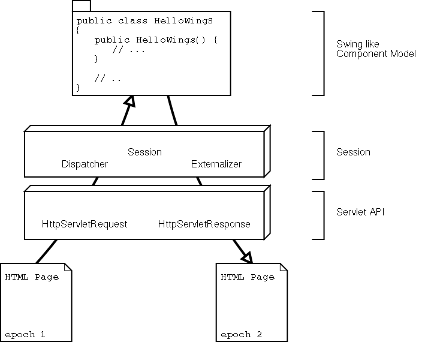

WingS is a servlet development framework. It uses the models, events and event listeners from Swing. Most Swing components have a wingS pendant with a similar API and behaviour. Like in Swing, the components are arranged in a hierarchy of containers, whose root container is hooked to a frame. WingS consists of three layers:
Figure 1 shows the basic architecture of wingS. The wingS application development happens in the upper layer and is very similar to the application development with Swing. All modern concepts, like MVC, events and listeners and highlevel components are available. Porting of simple Swing applications to wingS is a job of a few minutes. Ideally it does not take more than replacing 'J's with 'S's: JTree -> STree, JMenu -> SMenu, ...
There's one Session instance per HTTPSession. The Session can be conceptionally compared to java.lang.System. The Session is the bridge between the component model and the standard servlet API. It aggregates the Dispatcher, that delivers low level events to the components and the Externalizer, that makes resources available via HTTP. The Dispatcher is related to the HttpServletRequest, whereas the Externalizer delivers resources through the HttpServletResponse. The session state is spreaded over the components and their models. A request might lead to state transitions of some components and thus invalidate the containing resources.
The parameters of a HttpServletRequest are considered low level events. A low level event has a name, that consists of the target component's id and an epoch. The epoch allows the dispatcher to determine, if the event originated from a current page or from a cached page (back button) or reload request. Only current events are delivered to their target components. Outdated events are ignored. In the process of delivery, some components might adapt their state. After all low level events have been delivered, each component gets the chance to fire high level events. It's the component's job to react on the low level event. The text field will store the parameter value as its text property and fire TextEvents. The button will ignore the parameter value and fire ActionEvents.
The following code snippet shows how events are encoded in html:
<input type="text" name="epoch_id" value="some text"/>
<a href="_resource?epoch_id=_id">button</a>
The url of the anchor contains three units of information:
If a resource (icon, HTML page, style sheet, ...) should be accessible to the
client, it has to be "externalized". That means: the resource has to be
registered at the ExternalizeManager under a resource identifier. There is one
global ExternalizeManager per servlet and another one per session. Every
ExternalizeManager holds a map, that maps resource identifiers to resources.
The id can be coded into an URL, that is placed somewhere in the html code or
javascript code. When the browser requests that URL, the WingServlet or
SessionServlet passes the id to its ExternalizeManager. An
org.wings.externalizer.Externalizer handles the marshalling of the
resource. There are different externalizers for different resources. Beyound
that, resources are divided into dynamic and static resources. The following
table shows some of them:
| Externalizer | DynamicResource | StaticResource | StyleSheet | Text | Image |
|---|---|---|---|---|---|
| supported classes | DynamicResource DynamicCodeResource DynamicScriptResource DynamicStyleSheetResource |
StaticResource ClassPathResource FileResource ResourceImageIcon |
StyleSheet | String | ImageIcon |
Static resources keep their URL as long as they exist. Dynamic resources have an epoch counter, that is incremented on every change (->invalidation) and thus alter their URL. This prevents proxies and browsers from caching them. An externalized resource has one of the following scopes / flags:
Today's browser landscape is scattered with incomplete and buggy implementations of loose specifications and recommendations of the W3C. The same HTML code looks different on different browser's vendors and versions.
wingS addresses this problem with a concept similar to Swing's pluggable look and feel. A LookAndFeel consists of a CG for every component and a properties file, that maps CG classes to component classes. Each component delegates its rendering task to a special CG (code generator). The LookAndFeelFactory chooses a LookAndFeel on session initialization. The decision might be based on the browser identification. The LookAndFeel can be replaced / reloaded on the fly. It's not obligatory, that a LookAndFeel generates HTML code. Also WML or even PDF are possible.